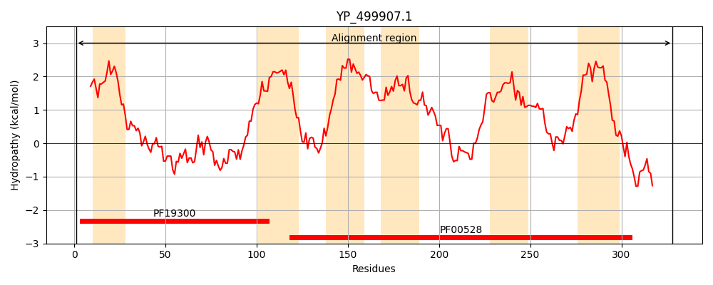
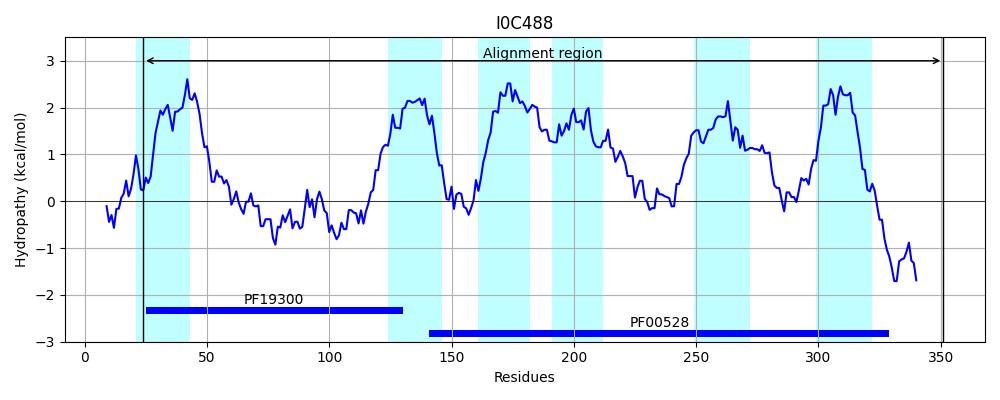
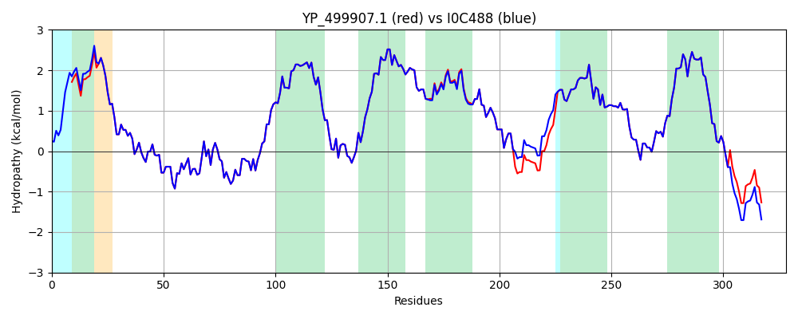

Hit Accession: I0C488
Hit TCID: 3.A.1.5.33
Hit Description: gnl|BL_ORD_ID|5217 gnl|TC-DB|I0C488|3.A.1.5.33 NikB OS=Staphylococcus aureus subsp. aureus 71193 GN=ST398NM01_1382 PE=3 SV=1
Mach Len: 328
e:0.000000
Query TMS Count : 6
Hit TMS Count: 6
TMS-Overlap Score: 6.200000
Predicted Substrates:CHEBI:25517;nickel(2+)
BLAST Alignment:
Score: 1612 , Bit scores: 625 bits, E-value: 0.0e+00, Alignment length: 328, Percentage identity: 98
Query: 1 MFIIKSMLYRLMQMIVVLFVISTLTFILMKLSPGNPVDKILHLDVAQVSTEQINATKDKLGLNDSLLVQWWHWMNHLLHFNLGKSFESKEPVTQILFNYAPITLLISFSTLVVSLCISIPLGIIAAKRFHKWTDKVIRVISTLSISLPAFFIGIILLFIVTNLMNIDSVILSQFILPVITLSLGMCAYIIRLVRSNLLMLLQSNIVQASRLRGMNERYILIHDLLKPTILPIIPLLGISLGSLIGGTVVIENLFDIPGIGYLLMDSIKSRDYPVIQGCVLFIGFFVVIINTIADLLTLLLDPKQRLQLGNPKIKTNTPLISESSDRHA 328
MFIIKSMLYRL+QMIVVLFVISTLTFILMKLSPGNPVDKILHLDVAQVSTEQINATK+KLGLNDSLLVQWWHWMNHLLHFNLGKSFESKEPVTQILFNYAPITLLISFSTLVVSLCISIPLGIIAAKRFHKWTDKVIRVISTLSISLPAFFIGIILLFIVTNLMNIDSVILSQFILPV+TLSLGMCAYIIRLVRSNLLMLLQSNIVQASRLRGMNE YILIHDLLKPTILPIIPLLGISLGSLIGGTVVIENLFDIPGIGYLLMDSIKSRDYPVIQGCVLFIGFFVVIINTIADLLTLLLDPKQRLQLGNPK KTNTPLISESSDRHA
Sbjct: 24 MFIIKSMLYRLIQMIVVLFVISTLTFILMKLSPGNPVDKILHLDVAQVSTEQINATKEKLGLNDSLLVQWWHWMNHLLHFNLGKSFESKEPVTQILFNYAPITLLISFSTLVVSLCISIPLGIIAAKRFHKWTDKVIRVISTLSISLPAFFIGIILLFIVTNLMNIDSVILSQFILPVLTLSLGMCAYIIRLVRSNLLMLLQSNIVQASRLRGMNECYILIHDLLKPTILPIIPLLGISLGSLIGGTVVIENLFDIPGIGYLLMDSIKSRDYPVIQGCVLFIGFFVVIINTIADLLTLLLDPKQRLQLGNPKNKTNTPLISESSDRHA 351 | Protein Hydropathy Plots: |
|---|
|  |  |
Pairwise Alignment-Hydropathy Plot:
|
|---|
|  |